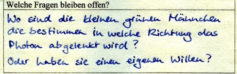

Unterrichtskonzept zur Quantenphysik des Photons
Schülermeinungen
Während der Unterrichtseinheit zur Quantenphysik des Photons wurde von den Schülern ein Lerntagebuch geführt. Lerntagebücher sind ein Medium, in das Schüler regelmäßig Zusammenfassungen, eigene Überlegungen und Stellungnahmen eintragen. In einem Lerntagebuch werden die individuelle Auseinandersetzung von Schülern mit dem Sachverhalt und die eigenen Lernprozesse dokumentiert. Der Lehrer erhält mit einem Lerntagebuch Einblicke in die Vorstellungen, die Schwierigkeiten und die „Aha-Erlebnisse“ der Schüler. Mit dem eigenen Lerntagebuch erhalten Schüler Einblicke in die persönlichen Lernprozesse, in die vorhandenen Kompetenzen und Fortschritte.
Vor dem Beginn der Unterrichtseinheit erhielt jeder Schüler das Lerntagebuch „Meine Quantenwelt“ (Abb. 1). Nach jeder Stunde mussten die Schüler den Lernzuwachs dokumentieren („Was hast du heute gelernt?“), die eigene Vorstellung reflektieren („Wie stellst du dir Quantenobjekte vor?“) und verbleibende Fragen („Welche Fragen bleiben offen?“) formulieren. Am Ende der Unterrichtseinheit musste auf der letzten Seite des Tagebuchs ein Abschlussbericht zum „Ausflug in die Welt der Quanten“ formuliert werden. Im Folgenden werden einige Schülermeinungen vorgestellt.
Abb. 1: Lerntagebuch: Meine Quantenwelt
Quantenphysik und Weltbild:
Quantenphysik und Zufall:

Meinung zur Photonenpaarquelle:
Quantenphysik und Verständnis:
Projektarbeit zur Quantenkryptographie:
Sonstige Meinungen:
Rückmeldung von Lehrern:
Auf der Homepage www.Quantenphysik-Schule.de von Herrn StD Hirlinger
heißt es zum Unterrichtsprojekt QuantumLab:
Zurück zur Unterrichtseinheit
Autor: P. Bronner, Januar 2009